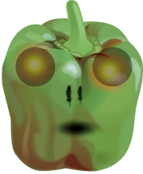

DSV är instutitionen för data- och systemvetenskap, som tillhör Stockholms universitet. Ofta är det sagt att vi studenter är fattiga och lever på snabbnudlar. Själv tycker jag om att äta
sallad och frukter till mina maträtte. Ofta så väljer jag de olika typer av paprikor. Det finns röda, gula och gröna. Själv tycker jag best om de röda, men det är troligen pågrund av färgen och inte smaken
- som jag inte kan skillja på egentligen.
Quiz! Kan du se skillnaden på paprikorna?
En Högkomprimerad JPG bild på en paprika till monster.En Lågkomprimerad JPG bild på en paprika till monster.En icke progressiv JPG bild på en paprika till monster.
Fritid
På min fritid brukar jag gå och träna, laga god mat och njuta av den fritiden man har som student. Kombinationen av hälsosam men god mat efter ett träningspass är otroligt underskattat
Annars gillar jag att lyssna på musik och spela spel. Jag vet, det gjorde jag som liten, och därför är det en stor del av mitt liv idag också.
Här introduceras Paprika Monstret till mitt spel
Skapandet av paprika monstret.Grå/vit paprika monstret, ca (1949).Cyberpunk paprika monster i framtiden (ca. 2077).

Paprik monsteret kan camoflera sig med sin transparanta hud.
.jpg)
.jpg)